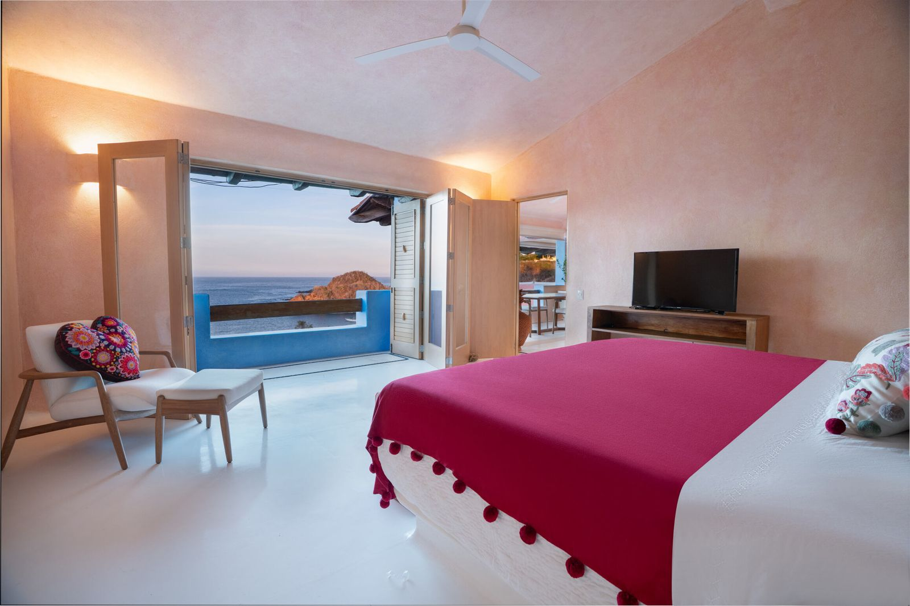
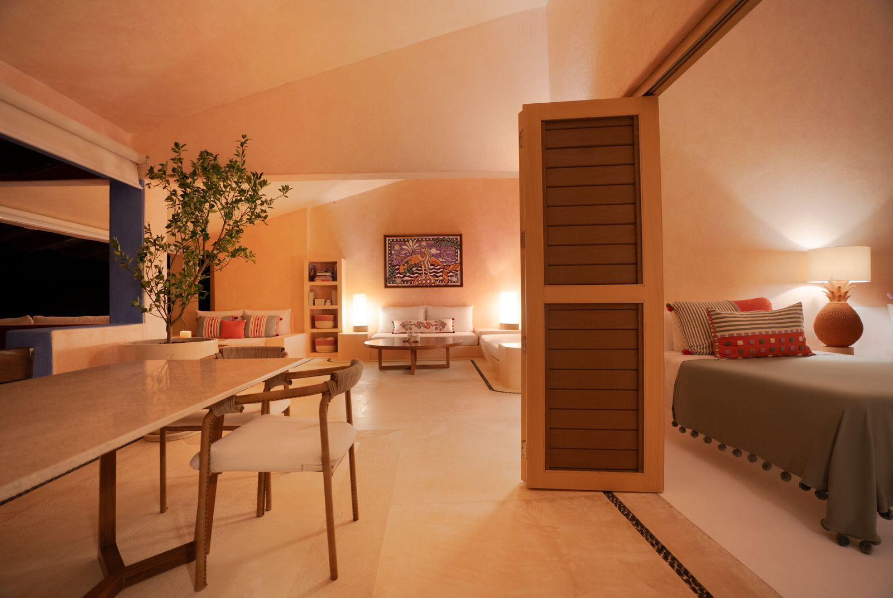

For sale
Casita La Mandarina
Casitas de las Flores, Costa Careyes
Casita
A residence inside Careyes rarely reaches the market.
Casita La Mandarina sits within Casitas de las Flores, the cluster of colour-washed hillside residences that has defined the Careyes silhouette since Gian Franco Brignone founded the community in 1968.
Two bedrooms, each with its own bathroom. Terracotta and rose-washed walls, hand-finished floors, an open kitchen, and living spaces that end in a terrace facing the Pacific with nothing in between.
It is sold fully furnished and fully equipped, down to the linens and the kitchen. Nothing to source before the first family weekend.
- Bedrooms
- 2, each en-suite
- Main bedroom
- King, terrace access
- Second bedroom
- Two singles, lounge area
- Bathrooms
- 2, double vanity, bath and rain shower
- Kitchen
- Full, with pass-through to living
- Outdoor
- Covered terrace, panoramic Pacific
- Condition
- Fully furnished and equipped
- Community
- Beach, polo and restaurants

The bedrooms
Two bedrooms, one horizon.
The main bedroom carries a king bed and opens directly onto the terrace through folding doors, so the ocean is the first thing you meet each morning. The second holds two single beds and its own seating area, built for children, friends, or the guests who make a house feel occupied.
The interior
Built-in, hand-finished, unmistakably Careyes.
The living spaces follow the Careyes vernacular: seating built into the architecture rather than placed on top of it, walls washed in terracotta and rose, inlaid stone lines tracing the floors, and lattice woodwork filtering the light.
Every principal room opens outward. There is no glass between the living area and the sea, only the frame of the terrace and the sound of the water below.

Gallery
Inside Casita La Mandarina.
10 photos. Select any to enlarge.
The setting
Costa Careyes, since 1968.
Founded by the Italian banker and artist Gian Franco Brignone, Careyes was conceived as a private community where architecture, art and the Pacific were meant to belong to one another. It remains family-owned and family-operated, reached by a road that keeps the outside world at a comfortable distance.
Beaches, a polo club, restaurants and beach clubs sit inside the community, and life moves between them on foot or by golf cart.
Ownership
How the purchase works.
Casita La Mandarina forms part of the Casitas de las Flores condominium regime within Costa Careyes. The transaction is structured as an assignment of rights (cesión de derechos) within that regime, subject to the community's own approval procedures.
Careyes sits within Mexico's restricted coastal zone, so foreign buyers acquire through a bank trust (fideicomiso). This is standard along the entire Pacific coast and is handled by the notary and trustee bank as part of closing. Full documentation is shared with qualified buyers under confidentiality.
Asking price
$1,200,000 USD
Floor plans, documentation and private viewings are arranged directly with Marco. Virtual walkthroughs available by appointment.